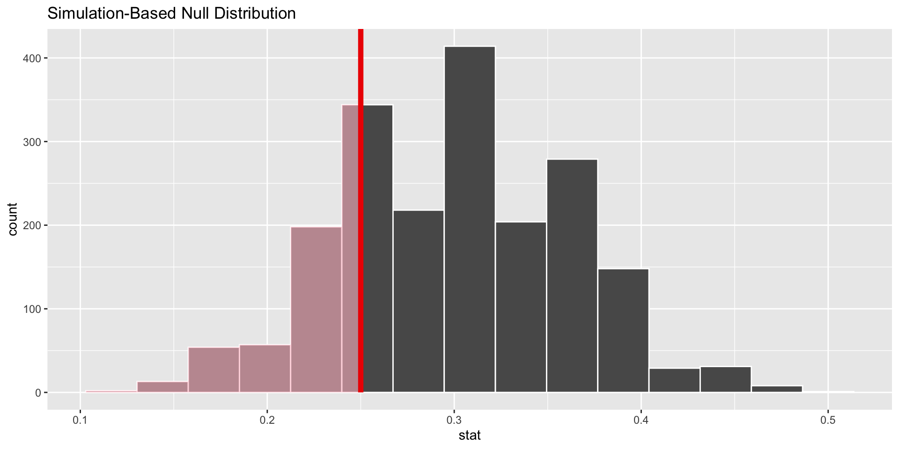

Hypothesis Testing 1
Single Proportion
May 16, 2026
Jobs Training Programs
- International development organizations are sometimes interested in providing training to people in order to help them find a job
- Imagine the unemployment rate in a low-income country is 30%
- One organization claims that its jobs training program is a success because only 15 of the 60 people that they trained did not have a job (25% unemployment rate)
- What should we think about this claim? Is this a successful program?
Today’s Code
Now let’s create some data to match our hypothetical example.
Use the base R head() function to see the first five rows.
Use the tail() function to see the last five rows.
Now let’s visualize it with a bar chart.

Question
Is it possible to assess this hypothetical organization’s claim using the data and information presented thus far?
“Our jobs program is a success because only 15 of the 60 people that we trained did not have a job. Thus our 25% unemployment rate beats the country’s unemployment rate of 30%.”
Correlation vs. causation
- No.
- We need to know more about how people were selected for the program in order to assess causality (e.g., were they randomly assigned?)
- But, we can still ask whether the unemployment rate of \(\hat{p}\) = 0.25 could be due to chance.
Hypothesis Testing Intuition
- We are going to assume “nothing is going on”
- In this case, the jobs program had no impact
- We are going to figure out what the distribution of outcomes we we might observe could be if nothing is going on
- In this case: if we take a sample of 60 from a population where the parameter is 0.3
- We will assess how likely we would be to observe our data if nothing is going on
- If very unlikely, we conclude that something is probably going on
Stating our Hypotheses
Null hypothesis (\(H_0\)): “There is nothing going on.”
Unemployment rate among those in the jobs program is no different than the country average of 30%.
Alternative hypothesis (\(H_A\)): “There is something going on.”
Unemployment rate is lower than the country average of 30%.
Hypothesis Test
- Hypothesis test: If the null hypothesis were true, is the data we have in our sample likely to have been generated by chance (due to random variability)?
- If yes, we do NOT reject the null hypothesis
- If not very likely, we reject the null hypothesis
Hypothesis Testing Framework
- Start with null hypothesis, \(H_0\), represents the status quo
- Set an alternative hypothesis, \(H_A\), that represents the research question, i.e. what we’re testing for
- Conduct a hypothesis test under the assumption that the null hypothesis is true
- if the test results suggest that the data do not provide convincing evidence for the alternative hypothesis, stick with the null hypothesis
- if they do, then reject the null hypothesis in favor of the alternative
p-values and Critical Values
- A p-value is the probability of observed or more extreme outcome given that the null hypothesis is true
- A critical value (\(\alpha\)) is the threshold at which we will reject the null hypothesis
- If the p-value is less than \(\alpha\), we reject the null hypothesis
- A standard threshold for \(\alpha\) is 0.05
One-Sided vs. Two-Sided Tests
- A one-sided test asks whether the parameter is greater than or less than the null value
- Use when theory predicts a specific direction (e.g., the program reduces unemployment)
direction = "less"ordirection = "greater"
- A two-sided test asks whether the parameter is different from the null value (either direction)
- Use when you have no strong directional prediction
direction = "two-sided"
- In our example, we predict the program reduces unemployment — so we use a one-sided test
The Null Distribution
- Since \(H_0: p = 0.30\), we need to simulate a null distribution where the probability of success (unemployment) for each trial (person in program) is 0.30
- We want to know how likely we would be to get an unemployment rate of 0.25 in our sample of 60, if the true unemployment rate were 0.30
What do we expect?
- So the first step is to simulate our null distribution
- And the question is, when sampling from the null distribution, what is the expected proportion of unemployed?
- We set up our simulator to select samples of 60 individuals with a 30% chance of being unemployed
- We then calculate the proportion of unemployed in each sample
Simulation #1
sim1
employed unemployed
42 18 [1] 0.3
Simulation #2
sim2
employed unemployed
41 19 [1] 0.3166667
Simulation #3
sim3
employed unemployed
38 22 [1] 0.3666667
We need to do this many times…
tidymodels
We can use the tidymodels package to help with this process…
What is being stored in null_dist?
Response: outcome (factor)
Null Hypothesis: point
# A tibble: 2,000 × 2
replicate stat
<dbl> <dbl>
1 1 0.367
2 2 0.2
3 3 0.283
4 4 0.2
5 5 0.4
6 6 0.317
7 7 0.3
8 8 0.333
9 9 0.283
10 10 0.25
# ℹ 1,990 more rowsThe null distribution
Where should this distribution be centered? Or, what should the mean be?
Visualizing the null distribution

Calculate the p-value
p-value–in what % of the simulations was the simulated sample proportion at least as extreme as the observed sample proportion?
Visualizing the p-value

p-value using infer
Visualing the p-value using infer

“Significance” level
- Conventionally, people use a p-value of 0.05 as a cutoff (“significance level”) for determining “statistical significance”
- That is, whether the null hypothesis should be rejected
- That is, whether the data we gathered is very unlikely to have been generated due to chance
- Always remember that this is a convention
- p=0.049 is under the cutoff, while p=0.051 is not: are these really different?
- When people report “statistically significant” results, they mean that the p-value from their analysis is less than 0.05
Our Hypothetical Study
- Our finding: if the true unemployment rate were 30 percent and we draw samples of 60, about 23 percent of the time we will get an unemployment rate lower than the one among the participants in the program (simply due to random chance)
- What should we conclude?
Conclusion
- We do NOT reject the null hypothesis: the unemployment rate in the sample could likely have been due to chance
Your Turn!
- What if the unemployment rate for the program was only 10%?
- Would you reject the null hypothesis in this case?
- Demonstrate by calculating the p-value
- Try changing the true unemployment rate in the null distribution to 0.50 (50%)
- Simulate the null distribution
- Would you reject the null hypothesis if the observed unemployment rate was 23% in this case?